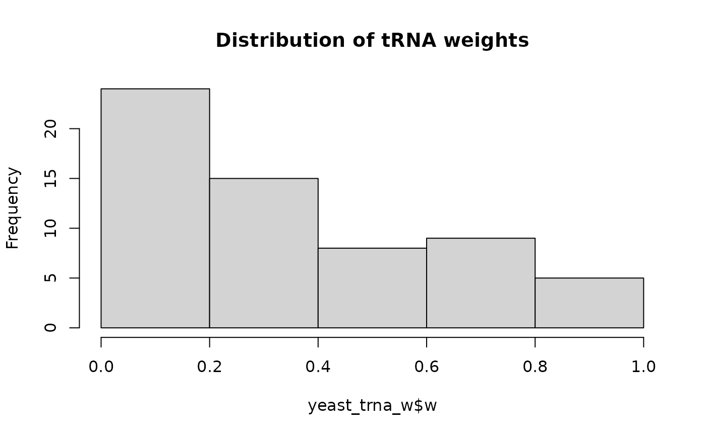

est_trna_weight calculates tRNA weights for each codon based on tRNA
availability and codon-anticodon pairing efficiency. These weights are used
in tRNA Adaptation Index (TAI) calculations and reflect how well each codon
is supported by the cellular tRNA pool.
Usage
est_trna_weight(
trna_level,
codon_table = get_codon_table(),
domain = "Eukarya",
s = NULL
)Arguments
- trna_level
A named numeric vector of tRNA expression levels or gene copy numbers. Names should be in the format "AminoAcid-Anticodon" (e.g., "Ala-GCA"). Each value represents the abundance of that tRNA species.
- codon_table
A codon table defining the genetic code, derived from
get_codon_table()orcreate_codon_table().- domain
Character string specifying the taxonomic domain: "Eukarya" (default), "Bacteria", or "Archaea". This determines the codon-anticodon pairing rules and selection penalties. Specify either "domain" or "s".
- s
A named list of selection penalties for non-Watson-Crick pairings. If provided, overrides the default domain-specific penalties. Specify either "domain" or "s".
Value
A data.table containing comprehensive tRNA weight information with columns:
aa_code: Single-letter amino acid codeamino_acid: Three-letter amino acid abbreviationcodon: Codon sequencesubfam: Codon subfamily identifieranticodon: Corresponding anticodon sequencetrna_id: tRNA identifier (amino_acid-anticodon)ac_level: tRNA abundance levelW: Absolute adaptiveness valuew: Relative adaptiveness (normalized weight for TAI)
References
dos Reis M, Savva R, Wernisch L. 2004. Solving the riddle of codon usage preferences: a test for translational selection. Nucleic Acids Res 32:5036-5044.
Sabi R, Tuller T. 2014. Modelling the efficiency of codon-tRNA interactions based on codon usage bias. DNA Res 21:511-526.
Examples
# Calculate tRNA weights for yeast using gene copy numbers
yeast_trna_w <- est_trna_weight(yeast_trna_gcn)
head(yeast_trna_w)
#> aa_code amino_acid codon subfam anticodon trna_id ac_level W
#> <char> <char> <char> <char> <char> <char> <table> <num>
#> 1: F Phe TTT Phe_TT AAA Phe-AAA 0 2.1390
#> 2: F Phe TTC Phe_TT GAA Phe-GAA 10 10.0000
#> 3: L Leu TTA Leu_TT TAA Leu-TAA 7 7.0000
#> 4: L Leu TTG Leu_TT CAA Leu-CAA 10 12.5935
#> 5: S Ser TCT Ser_TC AGA Ser-AGA 11 11.0000
#> 6: S Ser TCC Ser_TC GGA Ser-GGA 0 5.8751
#> w
#> <num>
#> 1: 0.1289059
#> 2: 0.6026456
#> 3: 0.4218519
#> 4: 0.7589418
#> 5: 0.6629102
#> 6: 0.3540603
# View the weight distribution
hist(yeast_trna_w$w, main = "Distribution of tRNA weights")
